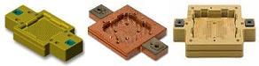
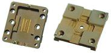
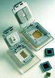

Contactors/Sockets
The
contactor is
the test accessory that makes the actual physical contact with
the device under test (DUT) to establish the necessary electrical
connection between the ATE and the DUT so that the former can
electrically test the latter. The contactor assembly is generally
a part of the test handler.
Thus, before production testing can begin, the test handler must first
be fitted with the test contactor assembly or contactor block suitable
for the device to be tested.

Fig. 1.
Examples of contactors
The
proper selection of
contactors for electrical testing has a great impact on test yields,
device grading, repeatability and reproducibility of testing, and
productivity. A poor choice of contactor can eventually lead to
contact problems that cause invalid
failures or test miscorrelations,
which in turn can result in
unwarranted machine
downtimes,
unexplained yield problems, and even customer returns.
A contactor has a
set of
contact
elements
that are usually in the form of metal fingers (also known as 'contact fingers') or spring-loaded
pins. These contact elements are the ones that come into contact with the leads or solder balls of the DUT
during electrical testing. Contact
elements are commonly composed of a
beryllium-copper
base metal with
gold-plating
on the
surface.
The
profile of a contact
element is critical to contact integrity and life prolongation.
Traditional test sockets are designed and manufactured with contact
elements that act as cantilevers
on which the leads of the DUT can rest. These cantilevers are given an
inherent amount of ‘spring’ in them so that they’ll tend to oppose the
forces exerted unto them by the leads of the DUT, ensuring good
electrical contact. This contact force
is a function of the flexing and compression properties of the contact
elements.
New contactor
designs use an ‘S’
structure for the contact elements which are believed to be more
reliable and robust than those using the cantilever design. The contact
force provided by these new designs depend on the flexing properties of
the elastomeric elements supporting the contact elements, and not the
properties of the contact elements themselves. As such, they are more
immune to contact issues caused by contact element deformation.
The
motion of the contact
element as it comes into contact with the lead is another factor in
selecting a good contactor. Old contactor designs simply push the
contact elements against the leads to make the contact. New contactor
designs give the contact elements a
‘wiping’ action, so that contaminants,
oxides, and residues on the DUT lead will first be removed before the
final contact is made.

Fig. 2.
More examples of contactors
Ease of maintaining,
replacing, or configuring a contactor
is another consideration when looking for a good contactor.
Contact elements
degrade
with usage, and should therefore be monitored and maintained
regularly.
It should be promptly
replaced
once it has exhausted its useful life, since poor contact caused by
worn-out contact elements can result in a lot of test issues.
Well-designed contactors should be able to do several hundreds of
thousands of contact cycles within its lifetime.
The electrical
characteristics of the contactor is also critical in ensuring the
integrity of the test process. Contact resistance, stray capacitance,
and stray inductance, as well as capacitive and inductive coupling must
all be minimized. The dimensions, shapes, and material of the various
features of a contactor as well as the contact area and tip topography
of the contact element all affect the electrical performance of a
contactor.
|
 |
|
Fig. 3.
Examples of sockets
|
The
term 'contactor' is also used to refer to
sockets employed to get convenient electrical
access to the DUT, especially if the DUT is a fine-pitch, high-pin count
complex device. Sockets are often used for hand-testing DUT's or
in failure analysis. The fine-pitched device is simply inserted
into the socket, which has leads that correspond to those of the device
but more widely-spaced for convenient electrical access. In some cases, the contactor used in
the contactor block may also serve as a socket on its own.
Examples of manufacturers of
contactors are Johnstech International, Dimensions Consulting Inc. (DCI) and Kulicke and Soffa
(K&S).
Table 1. DCI's Descriptions of their Contactor Manufacturing
Capabilities
|
DCI's
Description of their Product Offerings:
We offer
test
socket and contactor solutions for CSP, BGA, PGA and QFP
devices in the semiconductor test industry... and a
broad
product range-from sockets for RF micro lead frame packages to
high-speed ASICs with more than 1,000 pins.... We utilize all current contact technologies such as low
inductance micro pogo pins, elastomers and etched microstrip,
and can adapt the contact technology most suited to our customers'
needs.
|
|
DCI's Description of their Design Process:
Our socket design process
covers several rigorous phases. We use state-of-the-art
computer-aided design (CAD) tools, including 3D mechanical
modeling. After customer approval of designs, the product goes
into computer-aided manufacturing (CAM). Finally, we conduct a
range of stringent performance verification tests-from a
simple point-to-point continuity test to a complete
characterization of the socket's resistance, capacitance,
inductance, bandwidth and crosstalk. |
|
DCI's Description of their Advantages:
- Highest first pass yield - solid reliable contact
- Lowest cost of test - sockets typically last beyond
200,000 insertions and are easily maintained
- Quick-turn design - 3D Modeling software with
standardized configurations
- 10 years of contactor design and tester interface
experience
- Reduced time to production - same socket for
characterization and final test
|
|
DCI's Description of their Capabilities:
- Fine pitch sockets to 0.3mm
- RF sockets with center ground contacts; DC to >10GHz,
<0.1nH self-inductance
- Strip contactors for testing prior to part singulation
- Multi-site sockets for parallel testing to 64 devices
- E-Beam sockets for Schlumberger IDS systems
- Handler specific contactors for Delta, Seiko-Epson,
Daymark
- Characterization sockets for evaluation boards
|
Table 2. K&S's Descriptions of their Contactor Manufacturing
Capabilities
|
K&S's
Description of their Product Offerings:
K&S is a leading designer and producer of high performance
test sockets and contactors. We have designed and produced DUT (Device
Under Test) test sockets for the smallest chip scale packages, with less
than 100 contacts, and for the largest microprocessors, with over 1,000
contacts. And our test sockets handle pitches as tight as 0.4 mm. |
|
K&S's
Description of their Design Process/Capabilities:
The test socket design process is highly automated and progresses from
computer-aided design (CAD), which may include 3D electrical and
mechanical modeling, to computer-aided manufacturing (CAM). Performance
verification testing ranges from a simple point-to-point continuity test
to a complete characterization of the socket's resistance, capacitance,
inductance, bandwidth and crosstalk....
We use a combination of design techniques - including spring-loaded
probe contacts, a floating base, and package specific inserts - to gently
guide DUT package contacts into position while socket contacts and other
mechanical seating devices adjust and follow. This prevents damage to the
IC package during manual or automated actuation, and ensures that contact
force is distributed uniformly....
We design a variety of spring-loaded probe contacts to meet different
performance parameters. And because our contacts are separate and
independent from each other, low-inductance contacts that deliver
high-speed signals without degrading edge rates (rise and fall times) can
be placed along side higher-inductance contacts for power signals.
Separate, independent contacts also decrease crosstalk.
|
|
Books recommended for you: |
|
 |
 |
 |
 |
See also:
Test
Accessories;
Test Equipment;
Electrical Testing;
Semiconductor
Manufacturing
HOME
Copyright
©
2005.
EESemi.com.
All Rights Reserved.